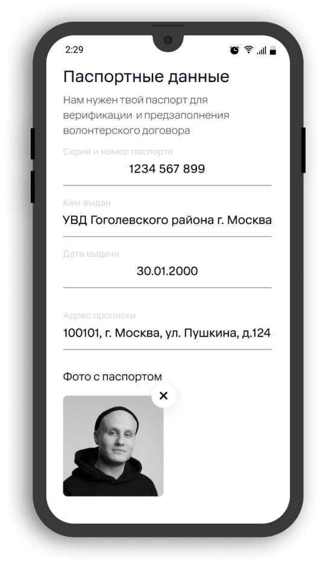
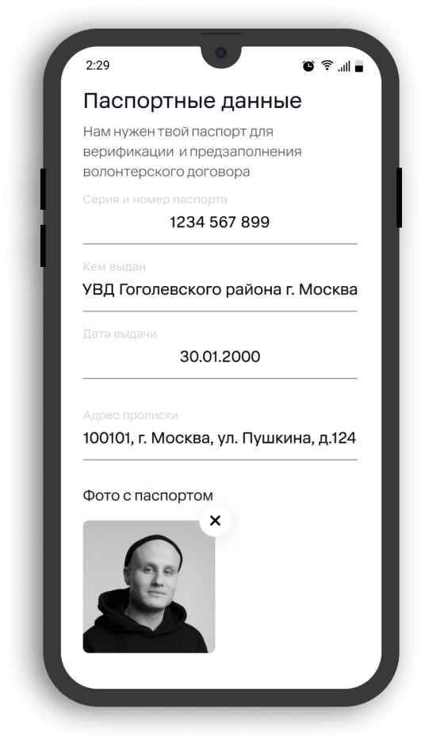

Наши решения
Разработка раздела «Дело»
Мы разработали новый раздел в приложении, который позволил помогать людям не только финансово, но и в бытовых нуждах. Теперь пользователи адресно могут помочь подопечным с покупкой продуктов, транспортировкой в нужное место, ремонтом и другими задачами.


Анкета пользователя
Мы создали подробную анкету, которая позволила благотворительным фондам получать расширенную информацию об исполнителях. Сами пользователи теперь могут больше рассказать о своих навыках и опыте.
 

Отдельный экран со списком дел
Дополнительно созданный экран позволяет пользователям приложения видеть все запланированные дела.